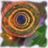

|  | Art and Literature |
|
This page is old and unmaintained, preserved as a historical curiosity. Please visit my current page.
... this will grow as I get more time to work on it ...
most immediate plans: improve text, add links to works in digital form
I've experimented with digital image manipulation for quite a few years, producing some pictures; last year, I got a digital camera, and have since taken over 10000 shots -- many good ones, but cleaning and organizing them is an undertaking for a long vacation. Who knows when that will come, or whether I will be able to keep up. Handling my huge amounts of media has concerned me for a while, see Projects.
This semester I'm taking an introductory painting course, which puts my has so far been very helpful in honing what I've been doing for a while, as well as opening new avenues. I had no idea of how amazingly good oil paints are until now.
I have an eclectic collection which includes orchestral/chamber music from the 18th century to the present, Russian and English rock, electronica of many kinds, songs of many Russian bards, and a variety of other things. Next semester my live "currently listening to" list should be working again.
Recently, I've began learning guitar in spare moments. So far my aspirations include learning to play Город (версию Аквариума); Звезду по имени Солнце, Кукушку (Цоя); Прикосновение к земле, Милую мою (Визбора). I'm making some progress.
Recently, I've been reading fiction mostly in Russian -- my class reading and written communications provide plenty of English. Some of my favorite authors (most non-English authors have translations):
My "to read" list has long outgrown any reasonable size, so reading now is a spur-of-the-moment activity. Recent books that I liked a lot were: a collection of Akutagawa's short stories, Lem's "Hay fever" ("Насморк", hope my translation is right), and "A manuscript found in the bathtub" ("Рукопись, найденная в ванной").
I like writing; however, expository essays required by typical humanities classes aren't much of an outlet. I'm hoping to be admitted into a creative writing class next semester.
|
Last updated November 14, 2003. This page is viewable with any browser. Valid XHTML 1.0, Valid CSS2. The entire site is © Alexey Spiridonov, 2003. It is licensed under the Creative Commons: Attribution-NoDerivs-NonCommercial license; the license applies to the website as one entity. |